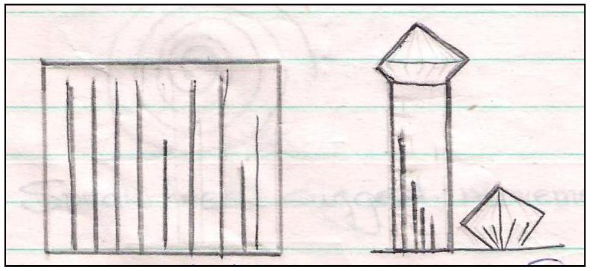

Elements Of ART
Education (Machakos Teachers College)
COMPONENTS / FUNDAMENTALS OF 2D ART
These are the basic Elements and Principles which govern the production of an art form.
ELEMENTS OF ART
These are the 'tools used to create a 2D artwork. The Elements of 2 D Art forms are
- Line
- Shape
- Space
- Texture
- Value
- Colour
- Form
1. LINE
- Is a group of dots joined together.
- Is a continuous mark on a surface.
- Is a mark joining two points.
- Is a group of objects arranged in a queue.
A line may have varying characters. It may be thick or thin, bold or subtle, continuous or broken, straight or carved ...
USES OF LINES
-
To describe or enclose a shape
-
To create depth volume and perspective
Lines can be used to shade an object to create an illusion of depth and volume by creating effect of light and dark
-
For expression
Lines may be used to express an emotion, mood, idea or suggest a feeling.
Horizontal lines suggest rest, calm, stability
Vertical lines suggest firmness
Diagonal lines suggest instability
Wavy lines suggest movement
Zigzag lines suggest disturbance
Spiral lines suggest movement to / from the centre
2. SHAPE
Is the outward appearance of an object.
Is an area with defined boundaries. The boundaries may be created by an outline, colour or texture
A shape may be organic or geometrical
a) Geometrical / inorganic shapes
Are shapes with defined outline / boundary and may have specific names e.g. Square, triangle ...
b) Organic shapes
Are irregular shapes. Most objects in nature are organic in shape e.g shape of the clouds, stones, trees
USES OF SHAPE
-
To represent an object
All objects can be represented in the form of a shape
-
To create depth, perspective
Shape can be used to create an illusion of distance by varying size.
-
For expression
3. SPACE
Space is the area covered by or around a shapes, forms, colors, texture and lines. Space can be positive or negative.
a) Positive space - is the actual area occupied by an object, shape, form, colour, line or texture in a composition
b) Negative space is the space around and within an object, shape, form, colour, line or texture
USES OF SPACE
-
To create balance
Using positive and negative spaces appropriately in a composition enable one to create a composition that is not too crowded and balanced.
-
To show focal point
The positive and negative spaces in a composition enable one to focus on the main theme in a composition
-
Create an interesting composition
Balance of negative and positive spaces in a composition draws a viewers' attention to an artwork.
4. TEXTURE
~Is the surface quality/ feel of an object. A surface may be rough, smooth, coarse silky ... Texture may be tactile or visual
a)Tactile Texture
~ Is texture experienced by touch surface. This type of texture is used in Art and design when producing 3 Dimensional forms such as Sculpture, Ceramics and basketry. It may also be used in 2d Art forms such as collage, mosaic ...
b)Visual Texture
When the surface quality is experienced by sight (seeing) it is referred to as Visual texture. This type of texture is mainly used in 2 d Art forms such as Painting, drawing, printing ...
Texture can be i)actual ii) Simulated or iii) Invented
i) Actual texture
Is texture of the real object (media) used. Eg. The texture wood on a wooden sculpture
ii) Simulated Texture
Is texture copied from nature. It involves trying to reproduce texture in a work of Art to resemble the actual texture as it appears in nature. E.g. texture of hair on a drawing
iii) Invented texture
This is the type of texture that is not realistic. Eg. The lines / marks created on a wooden sculpture by a chisel.
USES OF TEXTURE
-
To define a shape
The area covered by a particular texture represents a shape

-
To create dominance/ center of interest
The areas with more texture in a composition stands out more therefore becomes the focal point / dominant area.
-
To create depth / perspective
Texture can be used to create an illusion of volume / 3 Dimensions and represent depth. The area near the viewer appears to have more texture than areas further away.
-
To make a surface / composition more lively and interesting
Use of a variety of texture in a composition breaks monotony.
5. VALUE
Is the lightness or darkness of a surface / colour. Value of a colour can be created in 2 ways
- Shading and
- Tinting
i) Shading
Is the process of making a colour / surface darker by adding black or a darker colour Eg. Blue + black = Dark Blue
ii) Tinting
Is the process of making a colour /surface lighter by adding white or a lighter colour. Eg. Blue + white = Light blue
TONAL RANGE
USES OF VALUE
-
To create volume
Areas near a source of light appear lighter than areas further away. This creates an illusion of 3D. This illusion of 3D on 2D surface is created by tinting and shading.
-
To create an illusion of depth (Atmospheric /aerial perspective)
Value is used in painting and drawing to create atmospheric perspective - The objects in the foreground appear brighter than those in the distance.
-
For expression
Value can be used to express emotion, feeling, mood or an idea. Eg. Dark colours in a composition creates a feeling of gloom, mystery, menace or sorrow A composition with light and bright colours or values creates the opposite effects calmness, happiness, joy, hope ...
-
To create movement
Objects with the same / closely related value tend to attract the eye to follow the same path
-
To create harmony / unity
Closely related value creates a feeling of unity / harmony in a composition.
6. COLOUR
Colour is perceived by the sense of sight. One is able to perceive colour because of light.
- Colour can be defined as a form of light energy that has wave length.
- A form of mater that reflects light. Light is the primary colour which consists of the seven colours of the spectrum.
The secondary source of colour is pigment. Pigment is the colouring mater which gives colour to an object. In order to see colou, light has to fall on a surface which has pigment. The pigment reflects rays of colour of a specific type and absorbs the others. E.g. A red flower appears red because its pigments reflect the red colour and absorbs all the other colours of the spectrum.
PROPERTIES OF COLOUR
Colour has 3 basic properties
- Hue
- Value
- Intensity
i) Hue
Is the property of colour that makes it appear different from another. Hue is the name of a colour. E.g. Red is a hue (Red Hue)
ii) Value
Is the lightness or darkness of a colou. The value of a colour can be changed by adding white or a lighter colour (Tinting) or a darker colour (Shading)
iii) Intensity
Is the brightness or dullness of a colour. Colour of high intensity is pure, clean and saturated.
CLASSIFICATION OF COLOURS
PRIMARY COLOURS
~ Are the basic colours and cannot be obtained by mixing any other colours. These colours can be mixed in various proportions to get other colours. The primary colours are; Red, Blue and Yellow.
SECONDARY COLOURS
~ Are obtained by mixing any two primary colours in equal proportions. The secondary colours are; Orange, Purple and Green.
Red + Yellow = Orange
Red + Blue = Purple
Yellow + Blue = Green
INTERMEDIARY COLOUS
~ Are obtained by mixing a primary and a secondary colour. - Can also be obtained by mixing two primary colours in the ratio of 2: 1
Example
COMPLEMENTARY COLOURS
~ Are colours diametrically (Directly opposite each other on the colour wheel. E.g. Red and Green. Complementary colours are also known as contrasting colours
ANALOGOUS COLOURS
~ Are colours which line in juxtaposition (Next) to each other on the colour wheel. These colours are used in a composition to create harmony. Examples of analogous colours are Red and Orange; Green and Yellow
NEUTRAL COLOURS
~ Are black white and grey. These colours may be used to tone (Tint and shade) other colours.
MONOCHROMATIC COLOURS
~Are shades and tints of the same colour / hue. Example: Blue, Light blue, dark blue.
WARM COLOURS
~ Are colours associated with heat, fire, sun ... When used in a composition these colours tend to project or advance towards the viewer. Examples of warm colours are Red, Yellow and Orange
COOL COLOURS
~ Are colours associated with calmness. These colours are calm and tend to recede away when used in a composition.
TRIAD
~ Is a group of 3 colours evenly placed on the colour wheel. E.g. Red blue and yellow; Purple, orange and Green.
USES OF COLOUR
-
to identify an object
~ Is used to describe the appearance of an object. Example the sky is blue, grass is green. This way of using colour is referred to as objective use of colour.
-
For expression
Colour may be used to suggest / symbolize / communicate an idea, mood, and feeling or tell a story. Example Red may be used to suggest danger; warm colours may be used to suggest joy, Green to suggest growth. The use of colour in this way is known as subjective use of colour.
-
Aesthetics
Colour in a composition makes the work lively, interesting and pleasant to look at.
-
To create volume
Colour may be used in a composition to create an illusion of 3D / volume by shading and tinting.
-
To create perspective
An illusion of depth can be created in a composition by painting the objects near the viewer brighter while objects in the distance paler.
-
To create dominance
Colour attracts attention and directs the viewer to the important part of a picture. The focal point / centre of interest can therefore be painted in brighter or contrasting colours.
7. FORM
Form is an object that is three-dimensional and has volume. A form should have or appear to have length, width, and height. In drawing and painting, a form is created by combining several elements of art to give a shape the feeling of being three dimensional. For example a circle can be made to appear three dimensional to look like a sphere by shading. Forms can be geometric or organic.
a) Geometric forms are forms that are regular with specific names such as sphere, cube, pyramid, cone, and cylinder.
b) Organic forms are irregular. Most items in nature are organic such as; the shapes of flowers, branches, leaves, clouds, animals and the human figure